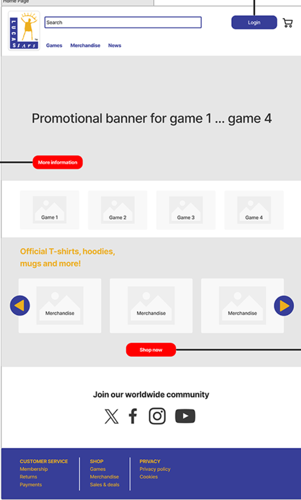

<!-- <!DOCTYPE html>
<html lang="nl">
<head>
    <meta charset="UTF-8">
    <meta name="viewport" content="width=device-width, initial-scale=1.0">
    <meta name="description" content="Game Webshop Full-Stack LIT Applicatie Propedeuse Blok 4 project met MVC architectuur, database en LIT components">
    <title>Game Webshop Full-Stack LIT Applicatie Portfolio</title>
    <link rel="stylesheet" href="styles.css">
</head>
<body>
    <header>
        <nav>
            <div class="container">
                <h1 class="logo"><a href="index.html" style="text-decoration: none; color: inherit;">Mijn Portfolio</a></h1>
                <ul class="nav-links">
                    <li><a href="index.html#home">Home</a></li>
                    <li><a href="index.html#projects">Projecten</a></li>
                    <li><a href="index.html#about">Over Mij</a></li>
                </ul>
            </div>
        </nav>
    </header>

    <main>
        <section class="project-header">
            <div class="container">
                <a href="index.html#projects" class="back-link">← Terug naar projecten</a>
                <h1>Game Webshop Full-Stack LIT Applicatie</h1>
                <div class="project-meta">
                    <span><strong>Rol:</strong> Full-Stack Developer</span>
                    <span><strong>Opleiding:</strong> HBO-ICT Propedeuse</span>
                    <span><strong>Blok:</strong> Blok 4</span>
                    <span><strong>Jaar:</strong> 2023-2024</span>
                    <span><strong>Teamgrootte:</strong> 4 studenten</span>
                    <span><strong>Technologieën:</strong> LIT, JavaScript / TypeScript, HTML, CSS, SQL</span>
                    <span><strong>Architectuur:</strong> MVC (Model View Controller)</span>
                </div>
            </div>
        </section>

        <section class="project-content">
            <div class="container">
                

                <div class="content-section">
                    <h2>Context van het Project</h2>
                    <p>
                        Het doel van dit project was het bouwen van een functionele webshop voor de games 
                        die in Blok 3 zijn ontwikkeld, inclusief merchandise. Dit was onderdeel van Blok 4 
                        van de HBO-ICT propedeuse, waarbij we een volledige e-commerce oplossing moesten 
                        ontwikkelen.
                    </p>
                    <p>
                        De webshop moest producten tonen, een winkelmand bevatten, en data gestructureerd 
                        verwerken. Het project werd uitgevoerd volgens Scrum sprints, met vaste reviews 
                        en retrospectives. Binnen dit team was ik end-to-end verantwoordelijk voor de 
                        technische realisatie: van database structuur en backend logica tot frontend met LIT.
                    </p>
                    <p>
                        Dit project was een grote stap in mijn ontwikkeling als software engineer. Ik paste 
                        voor het eerst MVC architectuur toe in een volledig werkende applicatie, bouwde 
                        complexe LIT components, en zorgde voor een gestructureerde dataflow van database 
                        tot frontend. Het was mijn eerste ervaring met het end-to-end realiseren van een 
                        full-stack applicatie binnen een teamcontext.
                    </p>
                </div>

                <div class="content-section">
                    <h2>Mijn Concrete Bijdrage</h2>
                    
                    <h3>Full-Stack Verantwoordelijkheid</h3>
                    <p>
                        Ik was end-to-end verantwoordelijk voor de volledige technische realisatie van dit 
                        project. Dit betekende dat ik de volledige technische realisatie heb opgepakt: 
                        database structuur, backend logica, en frontend met LIT.
                    </p>
                    <p>
                        <strong>Database structuur:</strong> Ik ontwierp en implementeerde de volledige 
                        database structuur voor de webshop. Dit omvatte tabellen voor producten, gebruikers, 
                        winkelmand items, orders, en relaties tussen deze entiteiten. Ik zorgde voor een 
                        goed genormaliseerde database die efficiënt queries kon verwerken.
                    </p>
                    <p>
                        <strong>Backend logica:</strong> Ik schreef de volledige backend logica die data 
                        ophaalde uit de database, verwerkte, en beschikbaar maakte voor de frontend. Dit 
                        omvatte CRUD operaties voor producten, winkelmand functionaliteit, en datastromen 
                        volgens het Model gedeelte van MVC.
                    </p>
                    <p>
                        <strong>Frontend met LIT:</strong> Ik bouwde de volledige frontend met LIT web 
                        components, waarbij ik componenten ontwierp voor productoverzicht, productdetails, 
                        winkelmand, en filtering. De frontend communiceerde met de backend via gestructureerde 
                        datastromen.
                    </p>
                    <p>
                        <strong>MVC architectuur toegepast:</strong> Ik paste zelf een MVC architectuur 
                        toe om structuur en schaalbaarheid te waarborgen. De Model laag bevatte databewerking 
                        en business logic, de View laag bestond uit LIT components, en de Controller laag 
                        coördineerde de interactie tussen Model en View. Deze architectuur zorgde voor 
                        scheiding van concerns en maakte de code modulair en onderhoudbaar.
                    </p>

                    <h3>LIT Components (Frontend)</h3>
                    <p>
                        Ik heb meerdere LIT web components ontworpen en gebouwd die de kern van de webshop 
                        vormden. Deze componenten waren modulair, herbruikbaar en communiceerden via events.
                    </p>
                    <p>
                        <strong>Componenten die ik heb gebouwd:</strong>
                    </p>
                    <ul style="color: var(--text-secondary); line-height: 1.8; margin-left: 2rem;">
                        <li><strong>Product cards:</strong> Ik bouwde herbruikbare product card componenten 
                        die productinformatie weergaven, inclusief afbeelding, naam, prijs en een "Toevoegen 
                        aan winkelmand" knop. Deze cards gebruikten reactive properties om data te ontvangen 
                        en events te dispatchen wanneer gebruikers interactie hadden.</li>
                        <li><strong>Product detail views:</strong> Ik ontwikkelde componenten voor 
                        detailpagina's van individuele producten. Deze componenten toonden uitgebreide 
                        productinformatie, meerdere afbeeldingen, en opties om het product toe te voegen 
                        aan de winkelmand.</li>
                        <li><strong>Shopping cart:</strong> Ik bouwde een winkelmand component die de state 
                        van de winkelmand beheerde. Dit component toonde items, liet gebruikers hoeveelheden 
                        aanpassen, items verwijderen, en toonde de totaalprijs. Het was een complex component 
                        met state management en event handling.</li>
                        <li><strong>Filters:</strong> Ik implementeerde filter componenten waarmee gebruikers 
                        konden filteren op categorie, prijs en andere criteria. Deze filters update de 
                        productlijst dynamisch via events en reactive properties.</li>
                    </ul>
                    <p>
                        <strong>State management toegepast:</strong> Ik paste state management toe voor 
                        productlijsten en winkelmand inhoud. Ik gebruikte reactive properties om component 
                        state te beheren, waardoor de UI automatisch update wanneer data verandert. Voor 
                        gedeelde state tussen componenten (zoals winkelmand inhoud) gebruikte ik events 
                        en een centrale state management oplossing.
                    </p>
                    <p>
                        <strong>Events geïmplementeerd:</strong> Ik implementeerde events zoals add to cart, 
                        remove from cart, en quantity change. Wanneer een gebruiker een product toevoegde 
                        aan de winkelmand, werd een event gedispatched dat andere componenten konden luisteren, 
                        zoals de winkelmand component die dan automatisch update. Deze event driven aanpak 
                        zorgde voor losgekoppelde componenten die onafhankelijk konden werken.
                    </p>
                    <p>
                        <strong>Componenten losgekoppeld via events en reactive properties:</strong> Ik 
                        hield componenten losgekoppeld via events en reactive properties. Componenten 
                        communiceerden niet direct met elkaar, maar via events. Dit maakte de code modulair, 
                        testbaar en onderhoudbaar. Reactive properties zorgden ervoor dat componenten 
                        automatisch update wanneer hun data veranderde.
                    </p>

                    <h3>Data & Backend</h3>
                    <p>
                        Ik was verantwoordelijk voor de volledige data laag en backend logica van de 
                        webshop.
                    </p>
                    <p>
                        <strong>Database structuur opgezet:</strong> Ik heb zelf de database structuur 
                        opgezet met tabellen voor producten, gebruikers, winkelmand items, en orders. Ik 
                        ontwierp relaties tussen deze tabellen met foreign keys en zorgde voor normalisatie 
                        om data consistentie te waarborgen.
                    </p>
                    <p>
                        <strong>Datastromen ontworpen volgens Model gedeelte van MVC:</strong> Ik ontwierp 
                        datastromen volgens het Model gedeelte van MVC. De Model laag bevatte alle 
                        databewerking: het ophalen van producten uit de database, het opslaan van 
                        winkelmand items, het verwerken van orders. Deze Model laag was gescheiden van de 
                        View laag (LIT components) en de Controller laag (logica die Model en View coördineert).
                    </p>
                    <p>
                        <strong>Data beschikbaar maken via gestructureerde logica:</strong> Ik maakte data 
                        beschikbaar voor de frontend via gestructureerde logica. Dit betekende dat ik 
                        functies schreef die data ophaalden uit de database, deze transformeerden naar een 
                        formaat dat de frontend kon gebruiken, en deze beschikbaar maakten via een gestructureerde 
                        API. De frontend kon dan deze data ophalen en weergeven in LIT components.
                    </p>
                    <p>
                        <strong>Begrip toegepast van CRUD operaties:</strong> Ik implementeerde CRUD operaties 
                        (Create, Read, Update, Delete) voor alle entiteiten. Gebruikers konden producten 
                        bekijken (Read), items toevoegen aan de winkelmand (Create), hoeveelheden aanpassen 
                        (Update), en items verwijderen (Delete). Deze operaties werden correct afgehandeld 
                        in de database met SQL queries.
                    </p>
                    <p>
                        <strong>Data consistentie:</strong> Ik zorgde voor data consistentie door correcte 
                        databewerking en validatie. Ik implementeerde checks om te voorkomen dat ongeldige 
                        data in de database terechtkwam, en zorgde ervoor dat relaties tussen tabellen 
                        correct werden onderhouden.
                    </p>
                    <p>
                        <strong>Scheiding tussen data en presentatie:</strong> Ik paste scheiding toe tussen 
                        data en presentatie. De data laag (database en backend logica) was volledig gescheiden 
                        van de presentatie laag (LIT components). Dit maakte de code modulair en zorgde ervoor 
                        dat veranderingen in de presentatie niet de data laag beïnvloedden, en vice versa.
                    </p>

                    <h3>UX, Requirements & Documentatie</h3>
                    <p>
                        Naast technische realisatie was ik ook verantwoordelijk voor UX keuzes en 
                        requirements documentatie, conform Blok 4 eisen.
                    </p>
                    <p>
                        <strong>User stories en acceptatiecriteria opgesteld (K4):</strong> Ik heb user 
                        stories en acceptatiecriteria opgesteld, conform Blok 4 eisen (K4). Dit betekende 
                        dat ik requirements analyseerde, user stories schreef die beschreven wat gebruikers 
                        moesten kunnen doen, en acceptatiecriteria definieerde die beschreven wanneer een 
                        feature "klaar" was. Dit hielp het team om duidelijk te hebben wat er gebouwd moest 
                        worden en wanneer een feature voltooid was.
                    </p>
                    <p>
                        <strong>UX beslissingen per sprint vastgelegd (K5):</strong> Ik heb UX beslissingen 
                        per sprint vastgelegd (K5). Dit omvatte keuzes over layout, interactiepatronen, 
                        kleuren, typografie en gebruikersflow. Door deze beslissingen te documenteren leerde 
                        ik niet alleen om bewust na te denken over design keuzes, maar ook om deze keuzes 
                        te verantwoorden en te communiceren met teamleden.
                    </p>
                    <p>
                        <strong>Nadenken over gebruikersflow:</strong> Ik heb nagedacht over gebruikersflow: 
                        hoe gebruikers door de webshop navigeerden, welke stappen ze doorliepen om een 
                        product te kopen, en hoe de flow zo soepel mogelijk kon zijn. Ik ontwierp flows die 
                        logisch waren en gebruikers naar hun doel leidden zonder frustratie.
                    </p>
                    <p>
                        <strong>Eenvoud van interactie:</strong> Ik zorgde voor eenvoud van interactie. 
                        Functionaliteit was duidelijk en toegankelijk: knoppen waren duidelijk gelabeld, 
                        formulieren waren simpel en overzichtelijk, en foutmeldingen waren begrijpelijk. 
                        Dit maakte de webshop gebruiksvriendelijk voor alle gebruikers.
                    </p>
                    <p>
                        <strong>Duidelijkheid van feedback:</strong> Ik zorgde voor duidelijkheid van feedback, 
                        bijvoorbeeld bij cart updates. Wanneer een gebruiker een product toevoegde aan de 
                        winkelmand, kreeg hij/zij direct visuele feedback: het item verscheen in de 
                        winkelmand, de totaalprijs werd bijgewerkt, en een bevestigingsmelding werd getoond. 
                        Deze feedback maakte het duidelijk dat acties succesvol waren uitgevoerd.
                    </p>
                </div>

                <div class="content-section">
                    <h2>Resultaat</h2>
                    <p>
                        De webshop was volledig functioneel met een productoverzicht, winkelmand en dynamische 
                        updates. De applicatie was technisch gestructureerd dankzij MVC architectuur, wat 
                        zorgde voor modulaire, onderhoudbare code.
                    </p>
                    <p>
                        <strong>Functionele webshop:</strong> De webshop bood volledige functionaliteit: 
                        gebruikers konden producten bekijken, filteren, detailpagina's bekijken, items 
                        toevoegen aan de winkelmand, hoeveelheden aanpassen, en een overzicht zien van hun 
                        winkelmand. Alle functionaliteit werkte correct en was gebruiksvriendelijk.
                    </p>
                    <p>
                        <strong>Technisch gestructureerd dankzij MVC:</strong> De applicatie was technisch 
                        gestructureerd dankzij MVC architectuur. De Model laag bevatte alle databewerking, 
                        de View laag bestond uit LIT components, en de Controller laag coördineerde de 
                        interactie. Deze structuur maakte de code modulair, testbaar en onderhoudbaar.
                    </p>
                    <p>
                        <strong>Volledig werkende applicatie zelfstandig realiseren:</strong> Het project 
                        toonde aan dat ik een volledig werkende applicatie zelfstandig kan realiseren binnen 
                        een teamcontext. Ik was end-to-end verantwoordelijk en realiseerde alle technische 
                        aspecten: van database tot frontend. Dit toonde mijn vaardigheid in full-stack 
                        development en mijn vermogen om verantwoordelijkheid te nemen voor complexe projecten.
                    </p>
                </div>

                <div class="content-section">
                    <h2>Wat mijn Impact was in het Team</h2>
                    <p>
                        Ik vormde de technische ruggengraat van het project. Anderen konden bouwen op de 
                        structuur die ik had opgezet: de database structuur, de backend logica, en de LIT 
                        component-architectuur. Ik nam verantwoordelijkheid voor complexe onderdelen en zorgde 
                        ervoor dat de technische basis solide was.
                    </p>
                    <p>
                        <strong>Technische ruggengraat:</strong> Doordat ik end-to-end verantwoordelijk was 
                        voor de technische realisatie, vormde ik de technische ruggengraat van het project. 
                        Ik had overzicht over de volledige stack: database, backend en frontend. Dit maakte 
                        mij het centrale punt voor technische vragen en beslissingen.
                    </p>
                    <p>
                        <strong>Anderen kunnen bouwen op mijn structuur:</strong> Anderen konden bouwen op 
                        de structuur die ik had opgezet. De MVC-architectuur, de LIT component-structuur, 
                        en de datastromen waren duidelijk gedefinieerd, waardoor teamleden konden werken 
                        aan specifieke features zonder de hele stack te hoeven begrijpen.
                    </p>
                    <p>
                        <strong>Verantwoordelijkheid voor complexe onderdelen:</strong> Ik nam verantwoordelijkheid 
                        voor complexe onderdelen zoals de winkelmand-functionaliteit, state management tussen 
                        componenten, en de dataflow van database tot frontend. Deze onderdelen vereisten 
                        diepgaand begrip van de volledige stack en zorgvuldige implementatie.
                    </p>
                    <p>
                        <strong>Voldoen aan kwaliteitscriteria van Blok 4:</strong> Met deze bijdrage voldeed 
                        ik aan meerdere kwaliteitscriteria van Blok 4 (K1, K2, K4, K5):
                    </p>
                    <ul style="color: var(--text-secondary); line-height: 1.8; margin-left: 2rem;">
                        <li><strong>K1 (Technische implementatie):</strong> Door end-to-end verantwoordelijk 
                        te zijn voor database, backend en frontend toonde ik technische vaardigheid en 
                        begrip van de volledige stack.</li>
                        <li><strong>K2 (Architectuur):</strong> Door MVC-architectuur toe te passen toonde 
                        ik begrip van software architectuur en het belang van structuur en schaalbaarheid.</li>
                        <li><strong>K4 (Requirements analyse):</strong> Door user stories en acceptatiecriteria 
                        op te stellen toonde ik vaardigheid in requirements analyse en het vertalen van 
                        opdrachten naar concrete implementaties.</li>
                        <li><strong>K5 (UX-documentatie):</strong> Door UX-beslissingen per sprint vast te 
                        leggen toonde ik bewustzijn van gebruikerservaring en het belang van documentatie.</li>
                    </ul>
                </div>

                <div class="content-section">
                    <h2>Wat ik heb Geleerd</h2>
                    <p>
                        Dit was het eerste volledige full-stack project dat ik realiseerde. Ik leerde hoe 
                        je end-to-end verantwoordelijkheid neemt voor een applicatie, van database tot frontend, 
                        en hoe je alle lagen met elkaar verbindt.
                    </p>
                    <p>
                        <strong>MVC-architectuur praktisch toegepast:</strong> Ik paste MVC-architectuur 
                        voor het eerst praktisch toe in een volledig werkende applicatie. Ik leerde hoe 
                        je Model, View en Controller scheidt, hoe je de verantwoordelijkheden verdeelt, 
                        en hoe deze architectuur zorgt voor modulaire, onderhoudbare code. Dit was een 
                        belangrijke stap in mijn ontwikkeling als software engineer.
                    </p>
                    <p>
                        <strong>Dieper inzicht in component-based frontend development:</strong> Door 
                        complexe LIT components te bouwen kreeg ik dieper inzicht in component-based frontend 
                        development. Ik leerde hoe je componenten ontwerpt, hoe je state beheert, hoe je 
                        events gebruikt voor communicatie, en hoe je herbruikbare, modulaire componenten 
                        maakt.
                    </p>
                    <p>
                        <strong>State management:</strong> Ik ontwikkelde diepgaand begrip van state management. 
                        Ik leerde hoe je component state beheert met reactive properties, hoe je gedeelde 
                        state deelt tussen componenten via events, en hoe je complexe state management 
                        oplossingen bouwt voor grotere applicaties.
                    </p>
                    <p>
                        <strong>Data-architectuur:</strong> Ik kreeg inzicht in data-architectuur: hoe je 
                        database-structuren ontwerpt, hoe je datastromen organiseert, en hoe je data 
                        beschikbaar maakt voor de frontend. Ik leerde hoe belangrijk het is om data goed 
                        te structureren, omdat dit de basis vormt voor de hele applicatie.
                    </p>
                    <p>
                        <strong>Grote stap richting professioneel software-engineer-denken:</strong> Dit 
                        project was een grote stap richting professioneel software-engineer-denken. Ik leerde 
                        niet alleen technische vaardigheden, maar ook hoe je structureel denkt over architectuur, 
                        hoe je requirements analyseert, hoe je UX-keuzes documenteert, en hoe je verantwoordelijkheid 
                        neemt voor complexe projecten. Dit toonde dat ik in staat was om als software engineer 
                        te werken op een professioneel niveau.
                    </p>
                </div>

                <div class="content-section">
                    <h2>Gebruikte Skills & Technologieën</h2>
                    <p>Bij dit project heb ik de volgende skills en technologieën gebruikt:</p>
                    <div class="skills-list">
                        <span class="skill-tag">LIT</span>
                        <span class="skill-tag">Web Components</span>
                        <span class="skill-tag">MVC Architecture</span>
                        <span class="skill-tag">Full-Stack Development</span>
                        <span class="skill-tag">SQL</span>
                        <span class="skill-tag">JavaScript / TypeScript</span>
                        <span class="skill-tag">State Management</span>
                        <span class="skill-tag">Event-driven UI</span>
                        <span class="skill-tag">HTML / CSS</span>
                        <span class="skill-tag">Database Design</span>
                        <span class="skill-tag">CRUD Operations</span>
                        <span class="skill-tag">Requirements Analysis</span>
                        <span class="skill-tag">UX Documentation</span>
                        <span class="skill-tag">Scrum</span>
                    </div>
                </div>

                <div class="content-section">
                    <h2>Project Afbeeldingen</h2>
                    <div class="project-images">
                        
                        <div style="display: flex; align-items: center; justify-content: center; min-height: 200px; background-color: var(--dark-card); border-radius: 8px; padding: 2rem; margin-bottom: 1.5rem;">
                            <p style="color: var(--text-secondary); font-size: 1.1rem; text-align: center;">
                                Productoverzicht screenshot volgt
                            </p>
                        </div>
                        <div style="display: flex; align-items: center; justify-content: center; min-height: 200px; background-color: var(--dark-card); border-radius: 8px; padding: 2rem;">
                            <p style="color: var(--text-secondary); font-size: 1.1rem; text-align: center;">
                                Shopping cart flow volgt
                            </p>
                        </div>
                    </div>
                </div>
            </div>
        </section>
    </main>

    <footer>
        <div class="container">
            <p>&copy; 2025 Mijn Portfolio. Alle rechten voorbehouden.</p>
        </div>
    </footer>
</body>
</html> -->
